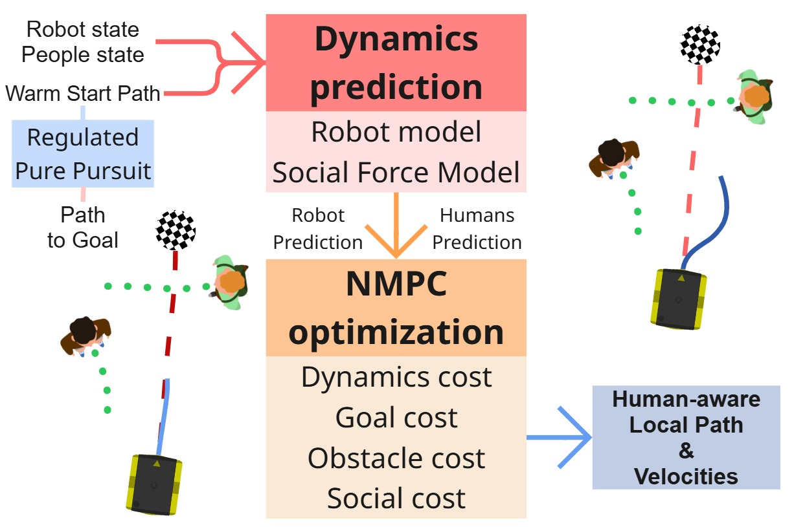
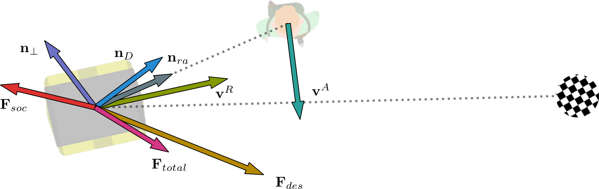

- Unicycle rollout model for robot predictions over the horizon.
- A critic stack assembled in the
optimizerforming one weighted least-squares objective. - SFM-based future agent states, co-predicted and coupled into the social penalties each cycle.
Safe and socially compliant navigation remains a fundamental challenge for autonomous robots operating in human-populated environments. Beyond collision avoidance, robots must anticipate human motion and respect personal space to ensure human comfort. Model Predictive Control (MPC) offers a robust alternative to classical and data-driven methods, although its effectiveness strongly depends on accurate human motion prediction and efficient computation. This paper introduces SFM-NMPC, a Social Force Model-based Non-linear Model Predictive Control framework that embeds human motion prediction directly within the optimization loop. By incorporating the Social Force Model into the dynamic model of surrounding agents, the controller jointly predicts the trajectories of humans and robots over the prediction horizon, thereby enabling socially-aware planning. A tailored set of social cost functions guides the optimization toward human-compliant behaviors. Despite the increased model complexity, the proposed formulation runs in real time at 20 Hz. Extensive simulated testing in crowded environments demonstrates that SFM-NMPC outperforms state-of-the-art baselines in social compliance metrics while maintaining efficient and smooth navigation. Visual trajectory analysis and an ablation study further highlight the contribution of the embedded SFM dynamics and social cost terms, confirming the effectiveness of the proposed approach for real-world social navigation.

The controller rolls out a unicycle model over the horizon, co-predicts agent states with the Social Force Model, and folds all critics into a single weighted least-squares objective solved with Ceres.
optimizer forming one weighted least-squares objective.
Social interaction terms and force components.
sfm_nmpc is a Nav2 controller plugin (sfm_nmpc::MPCSFMMotionModel) that optimizes short-horizon velocity commands with Ceres, combining classical trajectory-tracking critics with SFM social costs.
DistanceCost, AngleCostGoalAlignCost, GoalProximityCostObstacleCostVelocityCost, VelocityFeasibilityCostSocialWorkCost, ProxemicsCost, AgentAngleCost, CrossingCostcd ~/ros2_ws
rosdep install --from-paths src --ignore-src -r -y
colcon build --packages-select sfm_nmpc
source install/setup.bash
Set the following parameters in your Nav2 controller configuration file (e.g., params.yaml):
controller_server:
ros__parameters:
controller_frequency: 20.0
controller_plugins: ["FollowPath"]
FollowPath:
plugin: "sfm_nmpc::MPCSFMMotionModel"
trajectorizer:
desired_linear_vel: 0.6
lookahead_dist: 1.0
max_angular_vel: 1.4
time_step: 0.05
max_time: 1.5
optimizer:
linear_solver_type: "DENSE_SCHUR"
control_horizon: 18
parameter_block_length: 6
weights:
distance_weight: 20.0
angle_weight: 250.0
obstacle_weight: 0.13
social_weight: 720.0
proxemics_weight: 40.0
agent_angle_weight: 40.0
velocity_feasibility_weight: 5.0To launch the controller with the provided parameters, run:
ros2 launch nav2_bringup navigation_launch.py use_sim_time:=True \
params:=$PWD/src/sfm-nmpc/params/params.yaml@misc{trepella2026navigatingcrowdnonlinearmpc,
title={Navigating the Crowd: Non-linear MPC with Social Forces Dynamics for Human-Aware Robot Navigation},
author={Stefano Trepella and Andrea Ostuni and Mauro Martini and Pablo Pueyo and Noé Pérez-Higueras and Marcello Chiaberge and Fernando Caballero and Luis Merino},
year={2026},
eprint={2607.10374},
archivePrefix={arXiv},
primaryClass={cs.RO},
url={https://arxiv.org/abs/2607.10374},
}This work was partially supported by the SWIch action (P.R.F.E.S.R.2021/27 - D.G.R. n.19-6962) within the EMPATHY project, and by the PoliTO Interdepartmental Centre for Service Robotics (PIC4SeR). It is also partially supported by the project AI-FUSE (SAIA202500X163851SV0) and COBUILD (PID2024-161069OB-C31), funded by the Spanish Research Agency and the Ministry of Science and the European Union (MCIN/AEI/10.13039/501100011033) and by ERDF "A way of making Europe".